<ion-view view-title="Balance Check">
	<ion-content has-bouncing="true" padding="false">
		<div id="background">
			</img>
			<p>Get into the above position and Select ‘Start’ when you are ready.</p>
			<button onclick="window.location='#balance'" class="mainButton">Start</button>
		</div>
	</ion-content>
</ion-view>
